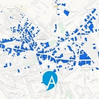

Parcours
-
Septembre 2014
Humanités et Technologie
J'ai débuté mes études d'ingénieur au sein du cursus HuTech, qui combine compétences techniques et réflexion sociales. Concevoir le technique en pensant à l'humain, c'était pour moi une manière d'envisager l'aménagement au plus près de ses réalités !
-

Été 2015
Stage en Écosse
J'ai rejoint l'entreprise écossaise Gael Force Engineering durant l'été 2015. J'y ai découvert les métiers de conception en ingénierie et ai contribué au travail ouvrier de construction des barges acquacoles que la société exporte à travers l'Europe.
-

Été 2016
Technicien SIG
Il fait parfois bon de contribuer au développement des villes qu'on aime : à l'été 2016, j'ai intégré le service SIG de la Ville d'Angoulême. A travers divers projets, j'ai aidé à la mise en place du service cartographique municipal et à la mise à jour des données géospatiales locales.
-

Automne > Printemps 2017
Concours d'urbanisme Ergapolis
Le concours Ergapolis a conforté mon goût pour l'aménagement pluridisciplinaire. Après cinq mois de collaboration, notre équipe Seinographie - architectes, paysagistes, sociologues, urbaniste et ingénieurs - a remporté la septième saison du concours.
-

Printemps 2017
Stage en programmation urbaine
Améliorer la qualité urbaine n'est pas une option. Pour approfondir mes compétences en programmation urbaine, j'ai rejoint l'équipe de Ville Ouverte, pour contribuer aux missions et au développement de l'agence durant six mois.
-

Septembre 2017
Ingénierie urbaine
Après plusieurs projets passionants sur l'espace urbain, j'ai choisi de prolonger l'expérience urbaine en me spécialisant en ingénierie urbaine, toujours à l'UTC. J'y ai finement étudié les outils techniques et approches qualitatives nécessaires à l'aménagement urbain.
-

Printemps 2018
Réinventer la durabilité urbaine
Quatre ans après le lancement de Réinventer Paris, j'ai co-signé une étude sur les apports et limites des appels à projets urbains innovants (APUI) pour faire la ville durable. Le fruit de ce travail appuyé par 30 entretiens avec promoteurs, AMO DD et acteurs publics est disponible en ligne.
-

Automne 2018
Échange aux États-Unis
Pour compléter ma compréhension de l'aménagement urbain, j'ai suivi plusieurs cours au département d'urbanisme de l'Université de l'Illinois. En parallèle de ce programme, j'ai égalementconduit une vaste recherche sur les équivalents nord-américains de l'aménagement urbain français.
-
What
is
next?